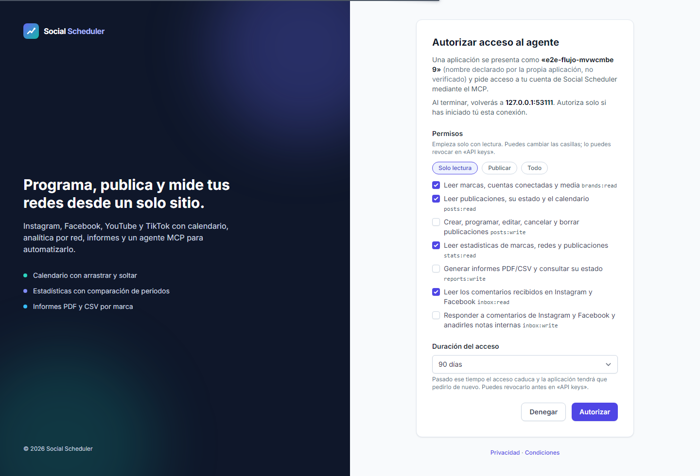
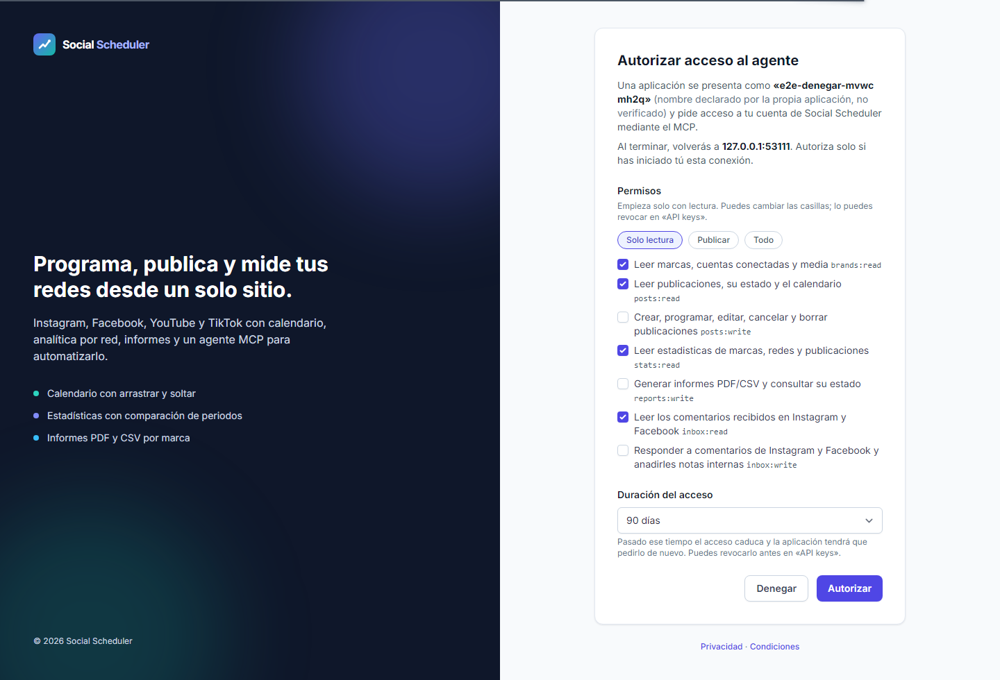
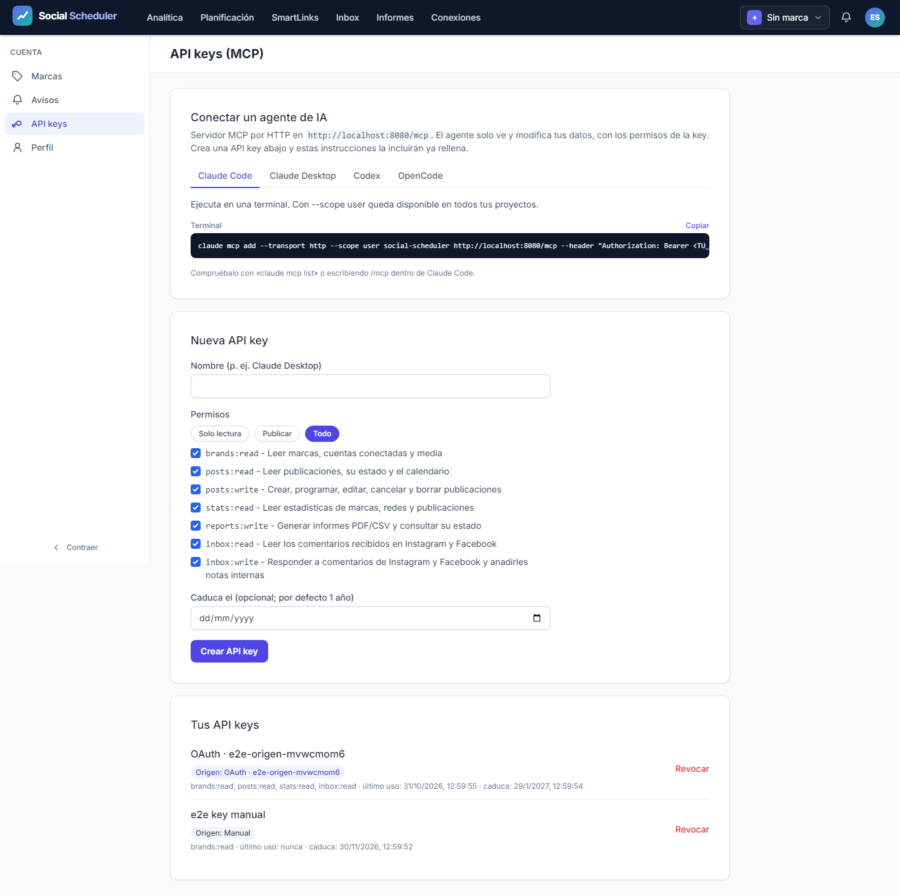

| Campo | Resultado |
|---|---|
| Fecha | 2026-10-31 |
| Automáticos | VERDE; Playwright exit 0; qa-gate exit 0 |
| Entrega completa | Abierta: manuales M-01 a M-05; T-30, T-64 y T-77 no se cierran |
| Entorno | http://localhost:8080, servidor propio gestionado y SQLite desechable |
| Fuentes | Plan, test-plan, ledger |
Salida íntegra de qa-gate.py sobre la copia exacta del reporter:
{
"verdict": "VERDE",
"counts": {
"passed": 502,
"failed": 0,
"flaky": 0,
"skipped": 2,
"interrupted": 0
},
"flaky_sin_justificar": [],
"flaky_justificados": {},
"threshold": "verde ⟺ 0 failed, 0 flaky sin justificar, 0 interrumpidos y ≥1 test ejecutado"
}
502/504 pasan, 0 fallos, 0 flaky, 2 skipped y 0 interrupted. Errores top-level: 0. El veredicto automático no acredita publicaciones, OAuth, métricas ni IA reales, ni completa la QA global del roadmap.
La configuración general conserva los 498 casos originales y añade 6 ejecuciones de dos regresiones de fecha (mismo mes y cruce de mes) en los tres perfiles: 504 casos, 168 por proyecto. Son 21 specs, Chromium, workers=1 y retries=0. No se aplica grep ni se restringen proyectos.
npx.cmd playwright test --max-failures=1
--max-failures=1 detiene el intento ante el primer fallo; no convierte lo no ejecutado en aprobado. El primer fallo, si lo hay, se notifica desde el mismo handle. No se reinicia el proceso por timeouts de observación.
Inicio 2026-10-31T11:49:16.5247356Z; fin 2026-10-31T12:31:52.3253078Z. Duración reporter 2554.57 s. Raíz nueva: C:\laragon\www\metricool\storage\framework\testing\t43\run-general-23f21d13-7032-4ba1-926b-c00d16c1cb0a.
Base: HEAD c344866 más diff local revisado, sin desplegar. A/B aprobaron el fix de prueba antes del GO. La causa del primer rojo fue una aserción que buscaba el día del mes anterior en un calendario que solo renderiza el mes actual; el fix modifica la prueba, no producción. La evidencia previa recibida es 81 casos de compositor correctos (27 por perfil, cero fallos/omitidos/flaky/errores), sin repetirla desde QA.
El servidor usa localhost:8080, reuseExistingServer=false y no utiliza E2E_NO_SERVER. PHP recibe únicamente el manifiesto fake explícito del harness. SQLite, media, sesiones/auth, vistas, correo y cachés viven bajo la raíz UUID. Redes externas simuladas y HTTP no simulado bloqueado. No se carga .env real ni se actúa sobre cuentas reales, DEMO real o VPS. Guardrail local: exit 0.
Se capturaron hashes antes y después: 16 archivos sin cambios y 0 cambiados. Incluyen los 13 del runner/config, composer.spec.ts, ApiKeyController y el manifiesto build.
| Proyecto | Total | Pasan | Fallan | Flaky | Skipped |
|---|---|---|---|---|---|
| desktop | 168 | 168 | 0 | 0 | 0 |
| mobile | 168 | 167 | 0 | 0 | 1 |
| mobile-360 | 168 | 167 | 0 | 0 | 1 |
Desglose skipped: 2 históricos del shell de escritorio en móvil y 0 otros no ejecutados/omitidos. Los históricos están en pages.spec.ts:50 (mobile y mobile-360): la barra lateral de escritorio no existe en esos perfiles. No se cuentan como aprobados.
| Spec | Pasan | Fallan | Flaky | Skipped |
|---|---|---|---|---|
| a11y.spec.ts | 105 | 0 | 0 | 0 |
| all-brands.spec.ts | 3 | 0 | 0 | 0 |
| bluesky.spec.ts | 12 | 0 | 0 | 0 |
| calendar-views.spec.ts | 9 | 0 | 0 | 0 |
| campaigns.spec.ts | 6 | 0 | 0 | 0 |
| composer.spec.ts | 81 | 0 | 0 | 0 |
| csv-export.spec.ts | 3 | 0 | 0 | 0 |
| first-comment.spec.ts | 18 | 0 | 0 | 0 |
| flows.spec.ts | 12 | 0 | 0 | 0 |
| gif-picker.spec.ts | 9 | 0 | 0 | 0 |
| hashtags.spec.ts | 9 | 0 | 0 | 0 |
| inbox-notes.spec.ts | 3 | 0 | 0 | 0 |
| instagram-grid.spec.ts | 3 | 0 | 0 | 0 |
| media-import.spec.ts | 39 | 0 | 0 | 0 |
| natural-schedule.spec.ts | 15 | 0 | 0 | 0 |
| oauth.spec.ts | 15 | 0 | 0 | 0 |
| pages.spec.ts | 94 | 0 | 0 | 2 |
| saved-texts.spec.ts | 6 | 0 | 0 | 0 |
| security.spec.ts | 24 | 0 | 0 | 0 |
| social.spec.ts | 21 | 0 | 0 | 0 |
| threads.spec.ts | 15 | 0 | 0 | 0 |
Trazabilidad del inventario: 498 originales (496 correctos y 2 omitidos), más 6 nuevas regresiones de fecha, todas con resultado: expected. Los casos «ayer es inaccesible en Auckland: mismo mes» y «cambio de mes» están en composer.spec.ts:328 y pasan en desktop, mobile y mobile-360. El caso integrado anterior pasa ahora en composer.spec.ts:350 en los tres perfiles. Detalle de los 504 casos: títulos, fichero/línea, proyecto, duración, estados, errores y adjuntos. El JSON original no se transforma.
| Escenario | Tareas | Specs ejecutadas | Resultado |
|---|---|---|---|
| E2E-01 | T-03, T-06 | inbox-notes.spec.ts | 3/3 pasan |
| E2E-02 | T-10, T-13 | calendar-views.spec.ts | 9/9 pasan |
| E2E-03 | T-20, T-28 | bluesky.spec.ts | 12/12 pasan |
| E2E-04 | T-32, T-35 | all-brands.spec.ts | 3/3 pasan |
| E2E-05 | T-39, T-41 | csv-export.spec.ts | 3/3 pasan |
| E2E-06 | T-44, T-47 | hashtags.spec.ts | 9/9 pasan |
| E2E-07 | T-50, T-52 | natural-schedule.spec.ts | 15/15 pasan |
| E2E-08 | T-60, T-62 | threads.spec.ts, bluesky.spec.ts | 27/27 pasan |
| E2E-09 | T-66, T-70 | gif-picker.spec.ts | 9/9 pasan |
Accesibilidad: los escenarios existentes incorporan axe y aserciones de desbordamiento. El test-plan no define bloques API-xx/A11Y-xx separados; no se atribuyen smokes curl adicionales.
No hay fallos/flaky/interrumpidos de casos en el reporter de este intento.
Ledger-lint:
⚠️ T-30: campo **Changelog** VACÍO — escribe una frase (qué cambia para quien USA el proyecto) o quita el campo
⚠️ T-64: campo **Changelog** VACÍO — escribe una frase (qué cambia para quien USA el proyecto) o quita el campo
ledger-lint: 0 incoherencias · 2 avisos (tasks.md)
Coverage-check (salida literal):
⚠️ T-01: sin cobertura declarada (si es tarea de UI, es un criterio huérfano → NO verde)
⚠️ T-02: sin cobertura declarada (si es tarea de UI, es un criterio huérfano → NO verde)
⚠️ T-04: sin cobertura declarada (si es tarea de UI, es un criterio huérfano → NO verde)
⚠️ T-05: sin cobertura declarada (si es tarea de UI, es un criterio huérfano → NO verde)
⚠️ T-07: sin cobertura declarada (si es tarea de UI, es un criterio huérfano → NO verde)
⚠️ T-08: sin cobertura declarada (si es tarea de UI, es un criterio huérfano → NO verde)
⚠️ T-09: sin cobertura declarada (si es tarea de UI, es un criterio huérfano → NO verde)
⚠️ T-11: sin cobertura declarada (si es tarea de UI, es un criterio huérfano → NO verde)
⚠️ T-12: sin cobertura declarada (si es tarea de UI, es un criterio huérfano → NO verde)
⚠️ T-14: sin cobertura declarada (si es tarea de UI, es un criterio huérfano → NO verde)
⚠️ T-15: sin cobertura declarada (si es tarea de UI, es un criterio huérfano → NO verde)
⚠️ T-16: sin cobertura declarada (si es tarea de UI, es un criterio huérfano → NO verde)
⚠️ T-18: sin cobertura declarada (si es tarea de UI, es un criterio huérfano → NO verde)
⚠️ T-19: sin cobertura declarada (si es tarea de UI, es un criterio huérfano → NO verde)
⚠️ T-21: sin cobertura declarada (si es tarea de UI, es un criterio huérfano → NO verde)
⚠️ T-22: sin cobertura declarada (si es tarea de UI, es un criterio huérfano → NO verde)
⚠️ T-23: sin cobertura declarada (si es tarea de UI, es un criterio huérfano → NO verde)
⚠️ T-24: sin cobertura declarada (si es tarea de UI, es un criterio huérfano → NO verde)
⚠️ T-25: sin cobertura declarada (si es tarea de UI, es un criterio huérfano → NO verde)
⚠️ T-26: sin cobertura declarada (si es tarea de UI, es un criterio huérfano → NO verde)
⚠️ T-27: sin cobertura declarada (si es tarea de UI, es un criterio huérfano → NO verde)
⚠️ T-29: sin cobertura declarada (si es tarea de UI, es un criterio huérfano → NO verde)
⚠️ T-31: sin cobertura declarada (si es tarea de UI, es un criterio huérfano → NO verde)
⚠️ T-33: sin cobertura declarada (si es tarea de UI, es un criterio huérfano → NO verde)
⚠️ T-34: sin cobertura declarada (si es tarea de UI, es un criterio huérfano → NO verde)
⚠️ T-36: sin cobertura declarada (si es tarea de UI, es un criterio huérfano → NO verde)
⚠️ T-37: sin cobertura declarada (si es tarea de UI, es un criterio huérfano → NO verde)
⚠️ T-38: sin cobertura declarada (si es tarea de UI, es un criterio huérfano → NO verde)
⚠️ T-40: sin cobertura declarada (si es tarea de UI, es un criterio huérfano → NO verde)
⚠️ T-42: sin cobertura declarada (si es tarea de UI, es un criterio huérfano → NO verde)
⚠️ T-43: sin cobertura declarada (si es tarea de UI, es un criterio huérfano → NO verde)
⚠️ T-45: sin cobertura declarada (si es tarea de UI, es un criterio huérfano → NO verde)
⚠️ T-46: sin cobertura declarada (si es tarea de UI, es un criterio huérfano → NO verde)
⚠️ T-48: sin cobertura declarada (si es tarea de UI, es un criterio huérfano → NO verde)
⚠️ T-51: sin cobertura declarada (si es tarea de UI, es un criterio huérfano → NO verde)
⚠️ T-53: sin cobertura declarada (si es tarea de UI, es un criterio huérfano → NO verde)
⚠️ T-54: sin cobertura declarada (si es tarea de UI, es un criterio huérfano → NO verde)
⚠️ T-55: sin cobertura declarada (si es tarea de UI, es un criterio huérfano → NO verde)
⚠️ T-56: sin cobertura declarada (si es tarea de UI, es un criterio huérfano → NO verde)
⚠️ T-57: sin cobertura declarada (si es tarea de UI, es un criterio huérfano → NO verde)
⚠️ T-58: sin cobertura declarada (si es tarea de UI, es un criterio huérfano → NO verde)
⚠️ T-59: sin cobertura declarada (si es tarea de UI, es un criterio huérfano → NO verde)
⚠️ T-61: sin cobertura declarada (si es tarea de UI, es un criterio huérfano → NO verde)
⚠️ T-63: sin cobertura declarada (si es tarea de UI, es un criterio huérfano → NO verde)
⚠️ T-65: sin cobertura declarada (si es tarea de UI, es un criterio huérfano → NO verde)
⚠️ T-67: sin cobertura declarada (si es tarea de UI, es un criterio huérfano → NO verde)
⚠️ T-68: sin cobertura declarada (si es tarea de UI, es un criterio huérfano → NO verde)
⚠️ T-69: sin cobertura declarada (si es tarea de UI, es un criterio huérfano → NO verde)
⚠️ T-71: sin cobertura declarada (si es tarea de UI, es un criterio huérfano → NO verde)
⚠️ T-72: sin cobertura declarada (si es tarea de UI, es un criterio huérfano → NO verde)
⚠️ T-73: sin cobertura declarada (si es tarea de UI, es un criterio huérfano → NO verde)
⚠️ T-74: sin cobertura declarada (si es tarea de UI, es un criterio huérfano → NO verde)
⚠️ T-75: sin cobertura declarada (si es tarea de UI, es un criterio huérfano → NO verde)
⚠️ T-76: sin cobertura declarada (si es tarea de UI, es un criterio huérfano → NO verde)
⚠️ T-77: sin cobertura declarada (si es tarea de UI, es un criterio huérfano → NO verde)
{"applies": true, "defined": ["E2E-01", "E2E-02", "E2E-03", "E2E-04", "E2E-05", "E2E-06", "E2E-07", "E2E-08", "E2E-09", "M-01", "M-02", "M-03", "M-04", "M-05"], "referenced": ["E2E-01", "E2E-02", "E2E-03", "E2E-04", "E2E-05", "E2E-06", "E2E-07", "E2E-08", "E2E-09", "M-01", "M-02", "M-03", "M-04", "M-05"], "broken_refs": 0, "tasks_sin_cobertura": ["T-01", "T-02", "T-04", "T-05", "T-07", "T-08", "T-09", "T-11", "T-12", "T-14", "T-15", "T-16", "T-18", "T-19", "T-21", "T-22", "T-23", "T-24", "T-25", "T-26", "T-27", "T-29", "T-31", "T-33", "T-34", "T-36", "T-37", "T-38", "T-40", "T-42", "T-43", "T-45", "T-46", "T-48", "T-51", "T-53", "T-54", "T-55", "T-56", "T-57", "T-58", "T-59", "T-61", "T-63", "T-65", "T-67", "T-68", "T-69", "T-71", "T-72", "T-73", "T-74", "T-75", "T-76", "T-77"], "tests_sin_referencia": [], "gwt_cubiertos": ["CA-01", "CA-02", "CA-03", "CA-04", "CA-05", "CA-06", "CA-07", "CA-08", "CA-09", "CA-10", "CA-11", "CA-12", "CA-13", "CA-14", "CA-15", "CA-16", "CA-17"], "gwt_sin_cubrir": [], "gwt_sin_id": 0, "test_plan_na": false, "marcador_no_canonico": null}
Exit ledger-lint: 0; exit coverage-check: 0. Las puertas comprueban coherencia y referencias literales; no prueban por sí solas UI ni ejecutan los smokes reales. Se conservan los avisos tasks_sin_cobertura y los manuales asociados a tareas de interfaz. El resultado automático no los cierra.
SHA-256 origen B7DB16DE01B7BDF7CD240CE03F0E6D9159D72471090B22BA4595BAC88776CE7E; copia B7DB16DE01B7BDF7CD240CE03F0E6D9159D72471090B22BA4595BAC88776CE7E; coinciden: True.
Log, exit real, metadatos, gate, hashes, manifiesto previo y comparación final.
Se conservan los adjuntos del reporter en screenshots/ y raw/artifacts/. No todos los escenarios producen capturas positivas inicial/final; no se inventan ni se presenta una imagen como evidencia de una aserción que no cubre. La revisión visual humana M-04 sigue abierta.



Total de capturas conservadas: 81. Relación completa por caso en case-summary.json.
Solo se escriben artefactos de QA. No se cambian fuentes, configuración, spec ni ledger; el orquestador gestiona estados y continuidad. Informe local, sin publicación en Confluence.